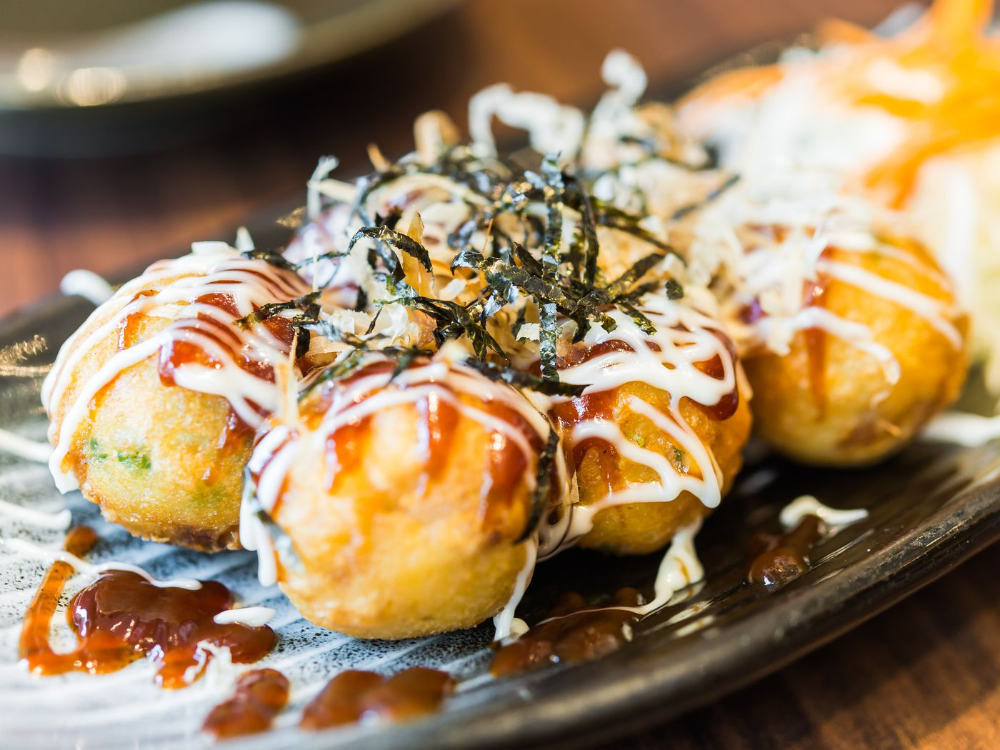

Takoyaki

Takoyaki
Meaning "grilled octopus" in Japanese, takoyaki are crispy balls of
pan-fried savory batter filled with diced cooked octopus and other flavorings.
Typically garnished with tangy takoyaki sauce, mayonnaise, ground dried seaweed and dried bonito flakes,
this is one of Japan's most popular street foods that originated in Osaka in the 1930s.
Ingredients:
- 1 1/2 cups Dashi (or 1 1/2 tsp instant dashi powder dissolved in 1 1/2 cups water
- 2 large eggs
- 1 cup all-purpose flour
- 1 1/2 tsp baking powder
- 1/2 tsp kosher salt
- Vegetable or canola oil
- 4 oz cooked octopus, cut into 1/3-in pieces
- 3 scallions, sliced thinly
- 1/3 cup tenkasu (tempura bits)
- 2 tbsp drained beni shoga, minced
For serving:
- Takoyaki sauce
- Mayonnaise, preferably Japanese Kewpie
- Aonori (powdered or flaked dried green seaweed)
- Katsuobushi (dried bonito flakes)
Dashi:
- One 4-inch-square piece kombu (dried kelp; about 10 grams)
- 3/4 cup packed katsuobushi (dried bonito flakes; about 15 grams)
Steps:
- Whisk together the Dashi and eggs in a large bowl.
Add the flour, baking powder and salt and whisk just until smooth.
Transfer the batter to a 1-quart measuring cup or bowl with a spout for easy pouring.
- Heat a takoyaki pan over medium heat (see Cook's Note). Generously grease the “holes” and the entire surface using a pastry brush. Fill each hole about three-fourths of the way with batter. Working quickly, place the following in each hole: 2 to 3 pieces of octopus, a pinch of scallions, a pinch of tenkasu and a pinch of beni shoga. (If you find that the batter is cooking too quickly, reduce the heat a bit. It may take a few tries to get the timing down.)
- Top off each hole with a little more batter — it is fine if it overflows a bit. Let cook until the bottom of each takoyaki is set but the inside is still wet, about 3 minutes. Working quickly, use 1or 2 skewers or chopsticks (I find it easier with 2) to turn each takoyaki about 90 degrees, cutting through any batter on the surface between the holes and “scraping” it into each hole as you go, forming a rough ball shape. Let any batter run out of the balls and when it starts to set, turn the balls completely over and cook, regularly rotating them until they are evenly golden brown all over and just cooked through, 3 to 4 minutes more (cooking time will depend on the size of the takayoki).
- Remove the balls to a platter, drizzle with takoyaki sauce and mayonnaise and then sprinkle with aonori and katsuobushi. Serve immediately and repeat with the remaining ingredients as needed.
Dashi:
- Combine the kombu and 3 cups cold water in a medium saucepan and let sit for about 30 minutes. (You can skip this step if you are short on time but it does lend a little extra flavor.) Heat over medium heat until the water comes to a near boil, but does not actually boil, about 5 minutes. Discard the kombu.
- Add the katsuobushi evenly over the water, bring to a boil over high heat and then immediately remove from the heat. Let steep for about 10 minutes without stirring.
- Pour the dashi through a fine-mesh strainer into a bowl or quart-size measuring cup. Do not press down on the katsuobushi, which can make the dashi cloudy and/or bitter.
- Dashi is best used the day it is made but can be cooled and refrigerated in an airtight container for up to 3 days. Makes about 2 1/2 cups